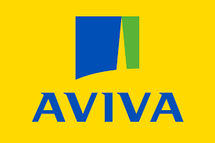
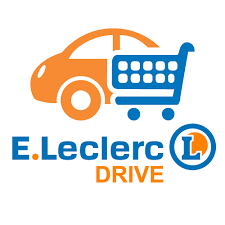
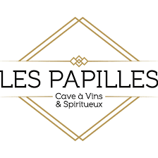

Mes compétences
Programmation
Utilisant les langages tel que HTML 5/CSS 3/PHP/C++ ainsi que Javascript que j'ai su apprendre uniquement en tant qu'autodidacte.
Outils informatique
Je maitrise également de nombreux outils informatiques comme Excel/Word/Powerpoint ainsi que Gretl.Communication
Ayant une expérience dans le milieu de la vente, je suis à l'aise avec les relations sociales. Je sais également utiliser les réseaux sociaux comme outil de communication.Graphisme
Maitrisant les application de graphisme comme Photoshop ou encore Lightroom, je réalise et retouche les images dont j'ai besoin.Mes expériences
Standardiste
Préparateur de
commande
commande
Vente/Manutention